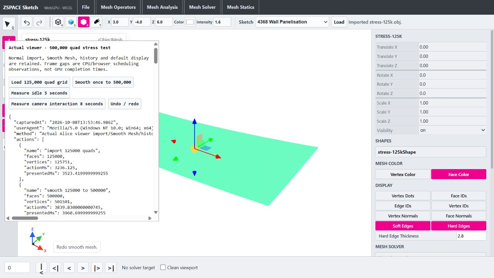

Viewer publication optimization
08 October 2026 · exact 500,000 quad workload · existing APIs, default display and history retained.
Boundary classification is faster. Full viewer latency is not consistently improved. The final exploratory Smooth run took 3.84 seconds versus 3.07 seconds before. Multi-second main-thread pauses and camera scheduling stalls remain.
Implemented
- Replace per-face arrays, string edge keys and per-edge adjacent-face arrays with a flat saturated corner-use counter. Numeric packed endpoints are used only within exact safe-integer limits, with string fallback for large IDs.
- Retain first-seen boundary order, repeated-corner use counts, self-edge and nonmanifold classification, weighted wire paths/crease direction/colors/widths and exported custom renderer callbacks.
- Reuse packed boundary membership to avoid string keys for interior render edges; skip empty crease lookup work while retaining own/inherited custom assignment objects.
- Add opt-in synchronous phase recorder at typed upload, native input installation/export, smooth/export, owned readback, geometry reconstruction, publication, camera fit, snapshot capture/commit and undo/redo. Ordinary viewer use records no timings.
Repeatable Node boundary classification
| Quads | Before median (ms) | After median (ms) |
|---|
| 125000 | 319.5 | 105.1 |
| 500000 | 2363.7 | 629.0 |
Actual browser actions — single run per version
| Action | Before (ms) | Final after (ms) |
|---|
| import 125000 quads | 2084.9 | 3236.1 |
| smooth 125000 to 500000 | 3066.6 | 3839.8 |
| undo smooth | 680.8 | 693.1 |
| redo smooth | 2554.5 | 2401.6 |
Smooth phases
Inclusive rows contain nested work. These columns are single samples, not medians. Input installation and smooth calls include native export.
| Phase | Before (ms) | Final after (ms) |
|---|
| history-before | 10.1 | 16.2 |
| typed-input-allocate-copy | not separately captured | 2.62 |
| native-input-install-and-export | not separately captured | 161.83 |
| typed-input-free | not separately captured | 0.14 |
| upload-and-native-install | 79 | 165.01 |
| cpp-smooth-and-export | 560.9 | 954.46 |
| owned-buffer-readback | 44.4 | 61.28 |
| payload-validation | 62 | 142.29 |
| surface-geometry | 232.8 | 525.37 |
| edge-geometry | 0.1 | 0.07 |
| boundary-incidence | 1270.1 | 1080.04 |
| wire-geometry-inclusive | 1714.7 | 1218.21 |
| scene-publication-inclusive | 2124 | 2120.21 |
| camera-fit | 52.5 | 144.42 |
| history-commit-inclusive | 55.6 | 103.57 |
Verification
- npm run build passed before changes, after profiling, after boundary extraction, after membership refinement and after final transfer instrumentation (TypeScript + Vite). Existing bundle-size advisory remains.
- 109 ordered boundary fixtures and exhaustive small-ID membership queries match the former adjacency algorithm. Includes random/repeated corners, open/shared/nonmanifold edges, self edges, triangle fallback, truncated connectivity and uint32 IDs requiring exact string fallback.
- 18 full renderer parity hashes match the preserved pre-change renderer, including geometry attribute/index bytes, ordered wire paths, visibility, line colors/widths and inherited crease assignments.
- Existing typed transfer tests passed 3/3: heap growth, allocation failure cleanup, legacy runtime fallback and ID validation.
- Actual viewer imported 125000 quads, smoothed to exactly 500000 quads and 501501 vertices, exercised default face-color/wire-shaded display, idle scheduling, brief wheel zoom, undo to 125000 and redo to 500000.
- Installed runtime SHA256 remains 27daad481b9c4a5d6b403b2cf15f79f4f2d7bcd066e3bbefb624d30c57799653. No C++/ABI/runtime changes in this milestone; native/WASM rebuild not required.
- Before snapshots retained in ignored wasm/tmp/viewer-publication-before. All unrelated dirty/untracked source, sketches, OpenUSD work and runtime changes preserved. No commit or push.
Limits and remaining work
- Node boundary medians exclude renderer construction, browser action, GPU and history. Browser before/final-after captures are single exploratory runs, not paired medians. Additional intermediate measurements varied; no consistent full-action speedup is established.
- Final Smooth action 3066.6 -> 3839.8 ms despite lower boundary/wire costs. Other phases also became slower. Timing variation/GC/system scheduling prevents causal attribution of the action regression from these runs.
- Phase names ending inclusive contain nested phases; do not sum inclusive totals with their children. cpp-smooth-and-export includes render export; native-input-install-and-export includes native mesh installation/export. This milestone does not isolate those C++ subphases.
- Final idle sample median 16.665 ms, p95 33.32 ms, one gap >50 ms. Brief camera sample median 16.665 ms, p95 49.935 ms, maximum 349.72 ms and 15 gaps >50 ms. Responsiveness is not established as consistently smooth. These are scheduling observations, not GPU completion/FPS measurements or continuous orbit tests.
- JS heap snapshots are not peak/total/GPU memory and fluctuate with GC. Final post-redo/interaction snapshot approximately 649 MB; before snapshot approximately 935 MB, insufficient to establish memory reduction.
- Full-renderer before/after verification harness uses the retained pre-change renderer snapshot in wasm/tmp/viewer-publication-before. Standalone regression packaging is future work.
- Boundary classification still builds an O(edges) map each reconstruction; caching requires explicit mutation/ownership invalidation and is deliberately not introduced in this step.
Next priority: Reduce reconstruction allocation and repeated incidence work with explicit lifetime/invalidation guarantees, especially face-color surface construction and undo/redo publication; consider a worker only with a reviewable runtime ownership contract. C++ storage installation remains another measured target.
500k viewer after redo

Changed files this milestone
- ../zspace_alice_webviewer/src/meshBoundaryEdges.ts
- ../zspace_alice_webviewer/src/meshPerformance.ts
- ../zspace_alice_webviewer/src/renderers.ts
- ../zspace_alice_webviewer/src/app.ts
- ../zspace_alice_webviewer/src/meshOperatorActions.ts
- ../zspace_alice_webviewer/src/historyController.ts
- ../zspace_alice_webviewer/src/wasmBufferTransfers.ts
- ../zspace_alice_webviewer/tests/meshBoundaryEdges.test.mjs
- ../zspace_alice_webviewer/reports/viewer-500k-stress.html
- ../zspace_alice_webviewer/reports/Alice-Viewer-Implementation-Roadmap.md
- tests/performance/viewer-boundary-parity.mjs
- reports/generate-viewer-publication-report.py
- reports/viewer-boundary-parity.json
- reports/viewer-publication-before.json
- reports/viewer-publication-after.json
- reports/viewer-publication-optimization.json
- reports/viewer-publication-optimization.html
- reports/viewer-publication-500k.png